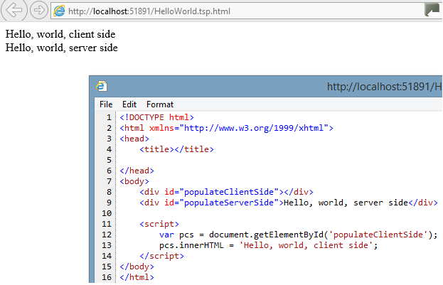

The Dual Browser Specification, version 1.0
In a nutshell
Many recent innovations in the area of web development have been client-side frameworks based on JavaScript, such as JQuery based frameworks, or AngularJS. These frameworks have largely shunted the benefits which might derive from synergies with server-side processing. The role of the server has, in many cases, been reduced to providing dumb static file server capabilities, in conjunction with providing live JSON data feeds.
The "Dual Browser Specification" (DBS) is a set of HTML attributes, which provide a light-weight synergy between the server and a JavaScript-heavy client application, for
building web pages. DBS content is built using files containing static HTML5-compliant
markup as a base, but modified dynamically using
JavaScript, combined with data in JSON or other formats. But the twist with DBS is that the same
JavaScript code can usually execute on the server and/or the client, and produce identical results.
Typed Server Pages (TSP) is the first implementation of the DBS. TSP is implemented as an ASP.net http handler. TSP also builds on the DBS, providing a JavaScript library, which adds some useful functionality on top of the base DBS. The
JavaScript of the supporting TSP implentation is compiled from Typescript (hence the "Typed"
in the name), and applications built using the TypeScript compiler / IDE
tools could benefit from the added type safety when integrating with the API. But custom application logic may be written directly in
JavaScript if preferred (or other languages which compile to JavaScript). The TypeScript/JavaScript libraries which come with TSP can also be leveraged in other future DBS implementation, built leveraging the Java or node.JS platforms, for example.
While JavaScript becomes a primary vehicle for delivering content both on the client on the server in the Dual Browser container, there are a few islands of functionality
where a more mature language (from a server point of
view) can be used - for example, in generating the data model, and in providing support for compiling tags in one form into another..
Standard JavaScript tags (<script>...</script>) will by default continue to execute on the
DOM in the client browser. As such, we would expect it to execute the same regardless of the web server (but results may vary, unfortunately,
based on different browser capabilities / quirks). However,
JavaScript tags in the html markup adorned with the custom attribute:
<script data-mode='server-side-only'>...</script>
will, in an environment which supports the DBS, execute the JavaScript
contained within the tag
on the server. The JavaScript which executes on the server will continue to have
limited access to a server-side representation of DOM, as the script will be executed in an environment
where the base html has been parsed in a "virtual browser". It is
limited in that it will not have access to the brower, window or event
objects, which only make sense in a true browser environment. In a host
environment where the custom attribute tags is not recognized by the
server-side processor, such as a plain vanilla Apache web server, or a
local file server,
it would continue to execute on the client, and will likely continue to succeed.
The reasons applications may benefit from the ability
to execute some or all of the JavaScript on the server side could include:
- Applying sensitive logic, such as data visibility or functional
capability tailoring, based on authorization.
- Performance optimizations made possible by filtering data and/or markup on the
server before sending to the client.
- Uniformity of JavaScript engine allows the same validation business logic, for example, to execute both in the client for quicker feedback, and the server, for fail-safe validation.
- Targeting client devices where the JavaScript engine cannot be
guaranted to be very powerful or comply to the latest standards, or
where JavaScript might be disabled completely (such as Lync).
Prototyping
The ease with which a developer can finesse in which tier (server vs.
client) dynamic logic gets applied means that, with a few minor
adjutments, one can turn a high fidelity prototype -- running on a
simple out-of-the-box web server, or even a local file server, where all the
logic executes in a browser of the developer's choosing,
using static data -- into a fully functioning production application
with real business data, targeting a large assortment of devices. In
fact, the migration can be so seamless and non intrusive that development could continue between
UI specialists and nitty gritty "engineering" programmers in parallel.
Supporting this kind of development pattern is an important guiding principle for this specification.
Modes
As we've seen, a central custom attribute is introduced in DBS:
data-mode, which can be set,
for example, to 'server-side-only'.
This attribute is applicable to <script/>, <iframe/>, <form/>, <style/>.
The following table lists all the possible values, the meaning, and the
default value if the attribute is not specified:
| Tag Name |
Possible Values / Meaning |
Default Value if not specified |
Notes |
| script |
| client-side-only |
Standard script - only executes within client browser. |
| server-side-only |
Script only executes within a "virtual
browser" on server. After
processing, this virtual
browser is then "DOM-serialized" to html, which is
sent to client browser. |
| both |
Script executes both in the client
browser and the virtual browser on
server. |
| depends |
Custom logic can be used to determine in which tier the code should execute.
The custom attribute data-dynamic-mode will call a server side function / method, which will return
one of the other three values.
|
|
client-side-only (except in case of Model script tags) |
Some subtleties arise in the case of
Model script tags. |
| iframe |
| client-side-only |
Standard iframe, embeds content via client browser child window. |
| server-side-only |
Content from referenced page is merged into parent
document. |
| depends |
Custom logic can be used to determine in which tier the code should execute.
The custom attribute data-dynamic-mode will call a server side function / method, which will return
one of the other three values.
|
|
client-side-only |
|
| form |
| client-side-only |
On form submit, form fields are set via AJAX request to server,
without redrawing the page. HTML markup is returned, which is merged into DOM document |
| server-side-only |
Standard form. On submit, form fields are sent
to server, which processes the user inputs, and page is
replaced by a new page (barring specification of target). |
|
server-side-only |
|
In the case of the style attribute, if the custom attribute
data-compiler is set, then the style attribute will be compiled into javascript,
and the
data-mode attribute then becomes applicable, taking on the same meaning and default as for the script tag. For example,
as discussed in the TSP implementation document:
Code Snippet
- <style data-mode="client-side-only" type="text/css" data-js-compiler="tsp.script-rules">
- #myTable{
- call: tsp.fillGrid;
- tsp-getDataTable: () => model.dataTable;
- tsp-rowSelection: tsp.SelectionOptions.single;
- tsp-titleFill: tsp.TitleFillOptions.text;
- }
- </style>
will be compiled on the server side into:
Code Snippet
- <script data-mode="client-side-only">
- tsp._if('#myTable', {
- 'call': tsp.fillGrid,
- 'tsp-getDataTable': function () { return model.dataTable; },
- 'tsp-rowSelection': tsp.SelectionOptions.single,
- 'tsp-titleFill': tsp.TitleFillOptions.text,
- });
- </script>
Modeling
The DBS provides a way to embed dynamic JSON data, as a branch in the global 'model' object.
Code Snippet
- <script data-model="[TestWebAppClassic.ProductManager, TestWebAppClassic].RetrieveProduct" data-mode="both" id="product"
async>
- var model = {};
- model.product = { Name:
"Ipsum Lorem" };
- </script>
The JavaScript code inside this kind of modeling script tag will be discarded on the server side during run time in the context of a functioning DBS container. The dummy data is there for two purposes -- it allows prototyping in a simple file server enviornment to provide a rudimentary representation of how it will look with actual data. Secondly, if the developer tests out some JavaScript by directly embedding it in the
page, then references to the model will benefit from intellisense, and
basic inconsistency checks, at least in sophisticated enough IDE's. There is a small performance hit from including dummy data inside the script tag - the server will spend slightly more time parsing the dom file, longer if the dummy data is extraordinarily large.
The key new attribute here is the data-model attribute. Constructing the model (or "view model") data structure is one place in the application logic where we can utlize platforms other than a JavaScript runtime, if we wish. The attribute specifies a static method in a static class. This method may be defined in one of two language runtimes: i) JavaScript, or ii) in whatever specific platform the implementation of the DBS framework is running. This string identifier for a server-side method will be referred to as the "server-side method string". The example above wraps the class identifier
in brackets, which signifies to look for a class in a .net assembly (for the
.net based implementation of TSP). No brackets would indicate to use a
JavaScript call, where the JavaScript method is either embedded in the page, or exists in a referenced JS file. Even if JavaScript is chosen, it will be called on the server side, regardless of the data-mode
attribute. The returned object from this static method is serialized
into JSON by the TSP Container, and added to the global 'model' object, keyed according to the id of the script tag ('product' in the example above). The static method can access the http
context object to gain access to any query string parameters, cookies, etc.
Like other script tags, the ones which contain the data-model attribute
also support the data-mode attribute, but its meaning is a bit different
here. Regardless of the value of data-mode, the data model will be
generated by the server, and will wipe away the content inside the script
tag. The only questions are whether 1) the data model JSON needs to be
downloaded to the client and 2) if so, whether the download should be part
of the payload of the original page, or instead should be downloaded
separately from the page via a call-back ajax call. This is sorted out
as follows:
- If attribute data-mode is 'server-side-only', then the data
will be retrieved, and the data will be added to the model, prior
to the processing of the other server-side javascript tags.
However, the data will be excluded from the output sent to the client.
- If attribute data-mode is 'both' (the default in this
special script tag case), this will do the same as the serer-side-only
setting mentioned above, but it will transmit the data to the
client. If the HTML5 attribute 'async' is set for the script tag,
however, the data which was retrieved for purposes of server side
processing will be briefly cached, and instead of embedding the data in
the main page payload, the client will make an ajax request to retrieve
the data and merge it into the global object model (and in supported browsers, the async flag will allow other processing to continue while waiting). This complex sequence of events will be managed by the DBS container. One other attribute comes into play when data-mode is 'both': The data-csFilter attribute. The value of such an attribute is also expected to be in the form of a server-side method string, and applies further filtering of the object derived from the data-model attribute. This allows the server-side processing to have access to a large object containing potentially sensitive information, but to whittle down the object to a subset which is relevant and public enough that it is appropriate to send this subset down to the client.
- If attribute data-mode is 'client-side-only', the data will
still ultimately be retrieved by the server. However, the act of
retrieving the data will happen much later, and will not be made until
the page is rendered by the client, which will then generate an AJAX
request. The AJAX request will go to the server, which will still
call the static method specified by the data-model attribute and pass
the JSON serialized back to the client, which will merge the data into
the global model object. Again, this complex sequence will be managed by the DBS container behind the scenes.
- If attribute data-mode is not specified, it will default to 'both'.
When data is retrieved asynchronously on the client, it will be up to the developer to ensure that any elements of the page which depend on this data, should get (re)evaluated following the retrieval of the data. Making this easier for the developer is an area specific implementations of the DBS may add value. The TSP framework implementation provides support for some such scenarios.
A special reserved model can be added to the page, as follows:
Code Snippet
- <script data-model="[Http].GetContext" id="myContext">
- </script>
This
special model will be provided by the DBS container, and it will generate a JSON representation of the basic request object (query string parameters, cookies, etc) in the following form:
Just as with standard model script tags, this special http context model can contain sample mockup inside the script for intellisense / prototyping purposes, and additionally the
data-mode attribute will follow the
same standard rules for script model tags, and the
data-csFilter will also be honored as before.
Other objects often associated with a web session, such as session objects or application cache, need to be exposed to the browser via
custom model tags.
Server side script tags
Implementation
Central to DBS is the concept of a "virtual browser" running in the server. This concept is a simple extension of the idea behind node.js and other server-side solutions which provide a wrapper around the Google Chrome V8 engine. But while those solutions can execute JavaScript, they do not emulate other critical aspects of what happens in a browser, starting with a DOM parser which can read a HTML compliant document, and query and manipulate the document using calls such as document.getElementById, or document.querySelectorAll, or node.appendChild. The following table provides a "shopping list" of functionality needed to implement a virtual browser with enough features to support the DBS.
| Virtual Browser Shopping List |
| Functionality |
Explanation |
| JavaScript Engine |
Ideally should have optimal performance, and be compatible with the JavaScript engine availalbe in modern browsers,
so that the same code can work both on the server as well as the client.
|
| HTML Parser to DOM Tree |
Generally needs to be a bit more sophisticated than a simple xml parser, because HTML5 has more nuances than xml -
it needs to support tags with no closing tag, such as the br tag, for example. Ideally, it would be as tolerant of malformed html as the major browsers are
(and interpret such non compliance in a similar way) |
| DOM API (HTML 4) |
The DOM tree needs to support the equivalent of many of the DOM methods available to HTML 4 browsers, including document.getElementById, document.getElementsByTagName, node.removeChild, etc. However, the method names may be called something different, in which case a Facade, mentioned below, is required. |
| DOM API (HTML 5) |
The DOM tree needs to support newer methods including document.querySelectorAll. Again, the names may not match the JavaScript DOM Api specification exactly, in which case a Facade is needed. |
| DOM API Facade |
Some DOM Parsers / Tree libraries may support the heavy-lifting functionality needed for the DOM API which JavaScript needs, but the method names may not perfectly match what JavaScript expects in the context of a browser. For example, getElementById might be called GetElementByID. A layer on top of the native api may then need to be built to provide seemless integration with JavaScript. |
| JQuery Facade |
Being that a significant portion of modern JavaScript manipulation of DOM is done with JQuery, ideally, a significant subset of the JQuery api should work when manipulating the DOM Tree. |
While this dual browser model can allow for much code reuse between the client and server (or code shifting as the needs warrant), we hasten to caution that there are two significant areas of functionality where maintaining an exact replica between the server-side browser, and the client-side browser, is not easy or natural to achieve 1) Event handling, such as the onmousemove event, makes sense on the client, but supporting such event handling on the server side would be contrived and likely to cause more harm than good in terms of performance. The DBS will provide for lighter-weight, more basic approaches for coordinating events between the client and server. 2) The DOM Tree sits in memory in the client browser for the duration of having the page loaded. It is tempting to consider maintaining a shadow copy of the DOM Tree in memory on the server for each user / loaded page as well, and having some process in place to keep them in sync. But that
is not the approach recommended by the DBS. While specific implementations of the DBS may take advantage of caching on the server, which may resemble such a solution to a certain degree, the assumption of the DBS is that the server will utilize mostly stateless approaches as a base, and DBS will specify approaches which will work well with this approach.
As an example the TSP implementation of the DBS mixes the following components to achieve the virtual browser.
Aternative options are mentioned also.
Because some aspects of JavaScript make no sense in the context of a server-side virtual browser, such as event handling in raw html or animations using JQuery, only a subset of the common JavaScript api's are required to be a compliant DBS container.
Example 1: Hello world
Let us now look at the simplest example which demonstrates the dual browser markup in action:
Consider the following markup:
Code Snippet
- <!DOCTYPE html>
- <html xmlns="http://www.w3.org/1999/xhtml">
- <head>
- <title></title>
- <script data-mode="server-side-only">
- var pss = document.getElementById('populateServerSide');
- pss.innerHTML = 'Hello, world, server side';
- </script>
- </head>
- <body>
- <div id="populateClientSide"/>
- <div id="populateServerSide"/>
-
- <script>
- var pcs = document.getElementById('populateClientSide');
- pcs.innerHTML = 'Hello, world, client side';
- </script>
- </body>
- </html>
As expected, the page displays two hello statements, but if processed by a DBS container such as TSP, viewing the generated html shows quite a significant difference in how the statements are generated:

Note that the script with attribute data-mode='server-side-only' has been removed from the output sent to the client (since it is not needed on the client), and has already executed on the server, so that the div with id populateServerSide is already populated on the server.
This same page, if served by a host which does not understand the DBS markup, would render the same exact display in the browser, but now the markup sent to the client would be identical between the client-side and server-side tags. It is an important design-goal for DBS that, as much as possible, the user not see a difference whether the same script is executed on the server vs. the client. But the observant reader may have spotted that in fact this example would actually fail the test -- in standard browers, the markup as specified would fail, because the script tag in the head is searching for a DOM element that does not yet exist. The virtual browser implemented by TSP does not have this limitation. In this case the entire DOM is first first loaded prior to the execution of the JavaScript. It is debatable whether this difference in behavior should be tolerated. At any rate, the safe thing to do is to place the JavaScript in a location so it will work im all environments.
(TODO: JQuery's ready function)
In many cases we will want to expose common functions both to the server as well as the client. For example, we may have a function that populates a grid, and we may choose to populate the first page on the server side, but populate subsequent pages on the client-side based on a cached data model. That is what the attribute value both for data-mode is there for. But sometimes this common code will need to do slightly diffferent things depending on whether the code is executing on the server or on the client. To determine in what mode the code is running, make use of the DBS reserved global variable mode:
Code Snippet
- var isClientMode = (typeof (mode) == 'undefined' || mode !== 'server');
Server side iFrames
Most server-side template engines, such PHP or ASP.net, supports some notion of server-side includes, where content from one file can be shared or embedded inside multiple other pages. This is certainly the case with the DBS, but one could argue the solution, consistent with the server-side script tag, is more elegant. Since on the client-side, the tag most often used to embed content from one page into another is the iframe tag, it is natural to extend the same tag to the server side:
Code Snippet
- <iframe data-mode="server-side-only" src="toc_TreeView.tsp.html#treeContainer" id="toc"></iframe>
The page being referenced should consist of a fully-formed html document -- like the script tag, we should
be able to switch the attribute between client-side-only (regular iframe) and server-side-only -- and get similar (but not identical) results,
so the page should, as a matter of best practices, work as a standalone page.
But notice the hash tag in the src attribute. This is expected to specify a unique id found in the referenced document. The DBS container will, on the server, remove all content outside the tag matching the id (with some important exceptions mentioned below), and will add the document fragment to the containing DOM document.
The DBS document will also merge all script and css references found in the referenced page. It will look for client-side identical refrences to js files or css files, and not duplicate them in the event it finds a matching reference.
Prior to embedding the content of the page the iframe tag references, the usual DBS processing will be executed on the referenced page, most notably execuring any server-side script or nested server-side iframes.
If a DBS document contains multiple server-side iframes linking to the same document, the container will only perform server-side processing once for the duration of the request on this document, and allow different parts of the DOM to be emedded in different locations of the page based on the hash tag identifier.
When emedding the content of a server-side iframe, the DBS container will ensure the uniqueness of the DOM id's by prepending the id's with the id of the containing iframe tag separated by an underscore.
Styles containing references to these id's will also be correspondingly namespaced.
Style directives
JQuery has proven to be a very popular library. Some of this popularity is due to succesfully building on the power of css selectors. However, JQuery is still very much a programming API. While JQuery may tend to encourage "declarative" coding styles, it does not provide a
directive based syntax like AngularJS.
The distinction between directive-based configuration and declaritive-based programming is somewhat murky, particularly in common parlance. Declarative programming actually has a formal definition - programming without mutable values. But often in casual conversation the term declarative is used when really the more effective term would be directive - e.g. "Hibernate provides a declarative approach to binding to a database" would be more descriptive if "declarative" is replaced with "directive". For our purposes, we define directives as syntax containing no (or at least very few) method calls (and it should also satisfy the declarative criteria - no mutable values). So, for example, a JSON object, used to configure a client-side datagrid, would be considered a directive element, as pure JSON does not allow for methods. (Typically, however, the JSON concept is extended to allow for syntax involving method calls -- for example, inside event handlers). The more an
api relies on such structures to define behavior (as opposed to programmatic method calls), the more we can call it a directive-based API.
AngularJS adds custom attributes to DOM elements for its directives. The advantage of this approach is that it is easy to associate the behavior to the element it is getting applied to. This makes sense when binding individual elements to specific places in a data model. But these directives are often extended to be used for many other aspects. The disadvantages of this approach are that 1) these directives will tend to detract from the semantic nature of the html markup and clutter up the page, 2) a large number of directives applied, repetatively, to many elements will tend to increase the bandwidth requirements of the page. These are the problems that JQuery solves quite effectively by applying method calls to all elements satisfying the css selector. But the disadvantage of the JQuery approach is it is difficult to find all the behaviors associated with an element, as the code can be scattered about.
The DBS provides support for a directive-oriented way of associating behavior with elements without the pitfalls of the AngularJS approach: CSS styles which get compiled, on the server, to JavaScript. For example:
Code Snippet
- <style type="text/css" data-compiler="[tspHandler.tspProcessor, tspHandler].attachEvents">
- input{
- event: change;
- handler: form1.changeHandler;
- }
- </style>
The
data-compiler attribute is another example of an attribute expecting a "server-side method" string.
The static method will get access to the DOM element containing the style (actually, the parsed CSS rules),
and will generate, typically, JavaScript / JSON based on the contents of the tag.
It may generate more than one tag. For example, it may generate one script tag consisting of JavaScript,
and another style tag which retains those rules which are actually css rules.
Or it might be used to compile some compact CSS format (like LESS) into browser-compatible CSS.
The static method, if written in C#, for example, must have signature:
The DBS container replaces the original style with these generated tags.The DBS itself does not provide any specific specifications of compilers (at least for version 1.0 of the specification), leaving such implementations entirely to the implementation of the specification, which may provide some handy compilers, or to the application developer. The TSP implementation does provide some highly useful compilers.
The advantages of using style directives like this are:
- Readability: This ties into a familiar pattern for adding detailed enhancements
to elements without cluttering the sematic html.
- Succinctness: Like JQuery, a single rule can apply to all elements matching the CSS Selector. But unlike JQuery, further code resuse can be accomplished by taking advantage of the same CSS cascading and specificity rules applied by browsers when applying styles.
- IDE Support: Some IDE's (e.g. Microsoft Web Expression, Dreamweaver) provide special support for CSS. For example, if you navigate to a DOM element in the HTML Markup, which references a css class name, it may be possible to select the class, and allow the IDE to jump to the CSS rule for the class (at least if there is only one such class definition). This is not available with JQuery code associated with the class.
The disadvantages are:
- Functionality specified this way will not work in a simple web server, but will require a DBS engine to
compile the directives on the server. Without such an engine, the directives will be ignored.
- IDE's will generally not recognize links to JavaScript functions. So in the example above, form1.changeHandler will
not provide any intellisense after typing "form1.", or be able to navigate to the function, or underline in red if the function name has a typo.
- Even for those IDE's which help maintain the relationship between DOM elements and the classes associated with them, it is less direct than seeing the directives directly in the element itself. Web browsers' developer tools help visualize the relationship even more clearly, but this help may not work with these custom styles [TODO: research].
Page Inheritance
We've seen with server-side iframes how the DBS supports embedding page components from one page into others. Another for of code reuse is "Page Inheritance," where an
extending page inherits and modifies a base page. The syntax:
Code Snippet
- <html>
- <head>
- <meta name="inherits" content="form1.tsp.html" />
- <title>Inherit Test</title>
- </head>
will take the contents of the base page, "form1.tsp.html" and merge the contents of the page itself on top of the base page.
The merging will follow rules similar to how
Microsoft's XML Transformation works,
and the merging will be done on the server-side (with a notable exception detailed later). A typical merging node will look as follows:
Code Snippet
- <span id="msg" data-xmatch="id" data-xmerge="Replace">Here is a new message</span>
Merging will follow these rules:
- Matching: Nodes in the extending page will be matched with nodes in the base page as follows:
-
Matching will start at the root level and get applied recursively. In the absense of special attributes, matching will be based on the tag name.
If there is only one tag with the same tag name at one level of the DOM tree, and the base page has the same single tag name at that level, then they match. So based on these rules,
<html><head><title></title></head><body></body></html> will typically easily match between the two documents.
-
Where there is more than one tag with the same tag name at the same level of the DOM tree, in either the base or the extending document, matching will need to be done with the help of a locator attribute. Locator attributes are either data-match or data-xmatch-cssSelect
-
The data-xmatch attribute indicates one or more other attributes (comma delimited) to find an exact match on all the values of the attributes.
-
A more flexible matching attribute is the xmatch/cssSelect attribute data-xmatch-cssSelect, which searches the base document for a single node matching the CSS selector criteria.
-
If no match is found, but the data-xmerge attribute requires the existence of a match (see below), an error will be thrown.
- Transforming: Nothing from the extending document will be added to the output coming from the base document, unless a matching node contains the
data-xmerge attribute. This attribute can have the following values:
- Append -- appends to the end of the matching parent node
- Insert after -- requires that the previous sibling node in the extending document matches a node in the base document
- Insert before -- requires that the following sibling node in the extending document matches a node in the base document
- Remove (requires matching node)
- RemoveChildren (requires matching node)
- Replace (requires matching node)
- ReplaceAttributes (requires matching node)
The meta tag with name "inherits" will normally cause the merging to be done on the server-side. However, there is an important special case where the meta tag will be ignored -- and that is in the case where the page is being requested from a client-side form submission, which will be described below. As we shall see, in this case, the merging will be done on the client-side, following the same rules as above. [This will allow for browsers which have JavaScript disabled to gracefully provide similar results, though with performance likely to be degraded.e Form later]
Forms